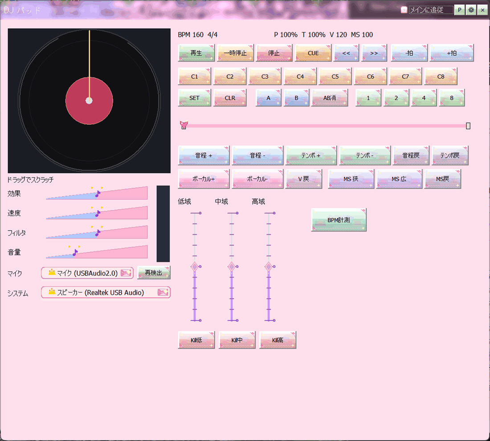

DJパッドは、再生中の音をその場で手で動かすための画面です。難しい設定はいりません。ボタンを押すと、すぐ音が変わります。遊びとしても、配信の演出としても使えます。

DJパッド
メディアプレイヤー下段の「DJ」ボタンから開きます。
附属ツールいろいろ の「トランジション・プリセット」を使うと、EQスイープ、フィルタ、クロスフェード秒などを「次の曲向け」の組み合わせとして当てられます。
調の相性がよい曲を次に置きたいときは、同じくツールの「キー確定／Camelot相性」で候補を出せます。
MIDIキーボードで操作する を使うと、手元のMIDI機器のノートやCCにこれらの操作を割り当てられます。MIDI学習でつまみをテンポやEQ帯に結び付けられます。
スマホやPCから操作する には「DJスクラッチ」のタブがあります。画面のレコード盤を指でこすって操作できます。パソコンから離れているときに便利です。
遊びとしてやってみたいなら、おまけ：Soft3D空中レース や おまけ：Soft3D迷路 のアイテムでもテンポやピッチが変わります。こちらは「遊んでいたら音が変わる」という逆向きの楽しみ方です。
Kill やフィルタを強くかけたまま忘れると、「音がおかしい」と感じることがあります。元に戻すボタンやリセットで、いつでも素の音へ帰れます。